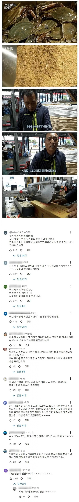

일관적 진술ㅋㅋㅋㅋㅋㅋㅋㅋㅋ

피해자들의 일관된 진술.... 게새끼들, 성범죄자였음?
이새끼야
범죄가 성범죄밖에 없냐
대가리가 어떻게 됐나 진짜
ㅋㅋ이건 그냥 일관된 진술로 무고박는 그거때문에 드립친거아냐?ㅋㅋㅋㅋㅋㅋㅋ
그냥 저렇게 놔 둬라. 알아듣는 개붕이 있으니 다행이다
왜 광분함? 뭐 찔림? ㅋㅋㅋㅋ
초고추장이나 발라먹어 ㅋㅋ 찔리긴 뭘 찔러
댓글에 비추 눌렀지? 대머리 된다 이제 ㅋㅋㅋ
내가 눌렀겠냐 ㅋㅋ
너 대머리된다 ㅋㅋ
내 댓글에 대댓단놈도 탈모시작됨
톱밥 꽃게를 처음 사면 다들 당황하는데 사실 흰 면포랑 쪼개지 않은 나무젓가락만 있으면 간단하게 해결 된다.
1. 상자 열기 전에 흰 면포를 나무젓가락 틈새에 끼워 넣은 다음에 상자를 우선 연다.
2. 면포를 낀 나무젓가락이 꽃게의 눈에 비칠 수 있도록 잘 흔들면서 꽃게의 요구사항을 최대한 경청하며 원만히 갈등상황을 해결한다.
항복
???: 식칼을 달라
난 꽃게 낚시해서 하루에서 수십번 싸웠더니 지금은 걍 낙승임
수돗물 담구기 - 수돗물 속에서 격렬히 저항함
냉동실 10분 투입 - 해동 과정에서 격렬히 저항함
뭐 어쩌자는건지 모르겠음 ㅋㅋㅋㅋ
꽃게 트로이 목마작전으로 집 점령당하고 처갓집에 피신온지 10일째
근데 저렇게 살려 보내는게 맞음
활어꽃게와 선어꽃게는 단가차이가 많이남
곧 죽을거(일명 꼬물이)는 그만큼 또 가격이 쌈
활어를 샀는데 선어로 도착하도록 하는거보다는 훨씬 낫지
글구 갑각류 공통 죽은 순간부터 빠르게 선도가 나감
문제는 생선과 다르게 살이 녹기시작하고 생선보다 훨씬 급격히 겉에도 변색이 일어남
수산시장에서 선별된걸 파는건 산지에서 분류할때 집게발 작업도 하나 그게 다 돈임 작업되어있는건 그 만큼 더 비쌈. 실제로 그게 그대로 경매 낙찰가에 반영됨
나도 활꽃게 샀다가 내 손으로 10마리 죽이는 스트레스가 커서 그 다음부턴 냉동꽃게로 꽃게탕 함.
얼음물 담그면 분명 기절한댔는데 이상할 정도로 잘버팀. 애가 좋아해서 집에서 몇번 해먹었는데 이젠 그냥 찜비 5천원주고 3키로 톱밥 꽃게 박스로 사먹어.
칼 뺏겼다 드립이 왜케 웃기냐 ㅋㅋ ㅋㅋㅋㅋ
심지어 두자루나 뺏김ㅋㅋㅋㅋㅋㅋㅋㅋㅋ
저렇게 살아있는 상태로 화장실에서 열어서 집게로 꺼내고 노즐로 수돗물을 부으면 바다에 살던 애라 그런지 수돗물에 정신 잃고 똥은 싹다 배출함
그상태로 찌면 줜나 깔끔하고 비릿내가 덜남
삼투압? 같은 먼가가 작용해서 기절하면서 다 배출하는거 같음
게는 죽으면 부패가 빨라서 사후 신선한 기간이 거의 없음.
아니 그래서 톱밥넣으면 왜 살아있는건데
그냥 잽싸게 과도같은 작은칼로 아가리에다가 1자로 꽂아서 ㅡ 자로 90도로 후비면 바로 골로감.
동물이란게 원체 생각보다 다들 힘이 좋음 ㅋㅋ 단박에 절명시켜야돼
얼음물에 넣으면 기절한대서 몇분 담갔다가 입에 칼 꽂아넣엇는데 몸부림쳐서 집게발에 손끝 물려서 찢어짐 ㅅㅂ ㅋㅋㅋㅋ
힘 존나 세더라 빡쳐서 꽃게 대가리 존나 내려침
난 킹크랩 샀는데 진짜 살아서 왔더라
누가 수돗물에 담그면 기절한다길래
싱크대 물 가득 채우고 톱밥박스째 엎었는데
ㅈㄴ 기어나옴 집게로 밀어도 안밀림
사실 그것도 중고 개봉품 산거였음
산사람이 박스열었다가 기겁하고 나한테 만원싸게팜
칼 뺏겼다는게 존나 웃김 ㅋㅋㅋㅋㅋㅋㅋㅋㅋ
집게로 들고<-여기서 이미 패배함 아 ㅋㅋㅋ